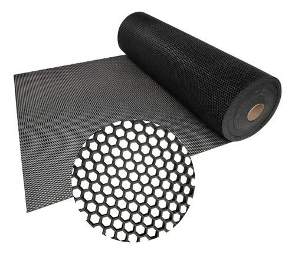
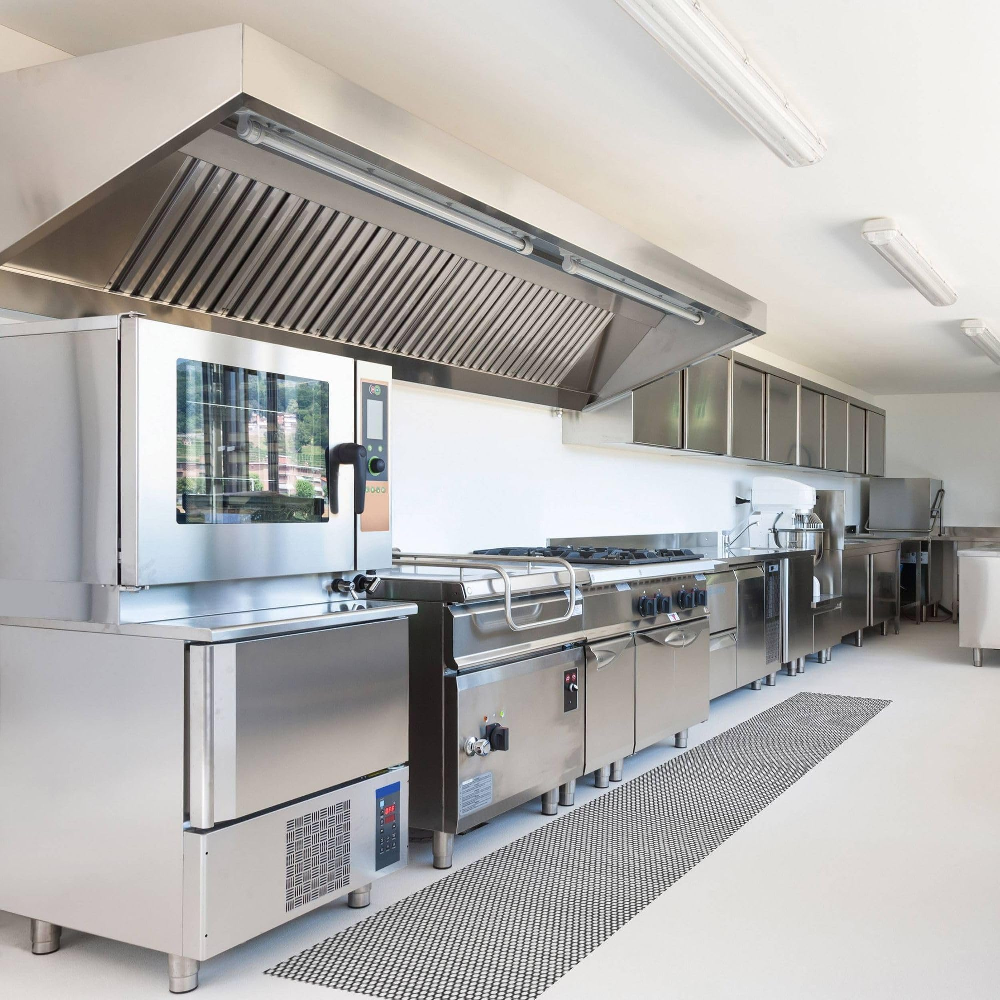
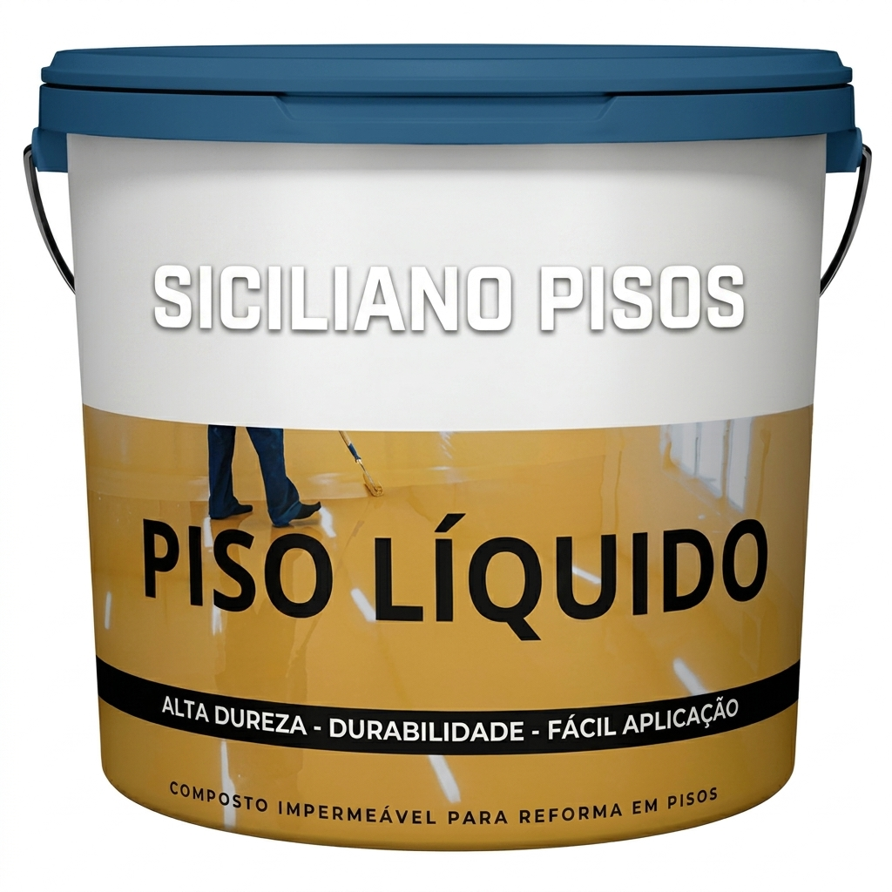
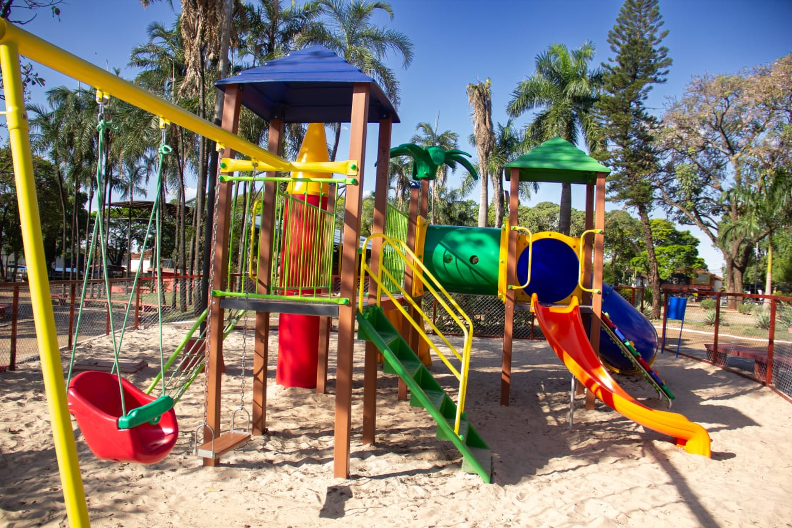

Grama Sintética Decorativa
Ideal para acabamentos estéticos, áreas infantis e espaços pet. Produzida para resistir a intempéries e manter a beleza natural.
- Medidas/Espessuras: 12mm e 20mm
- Composição: 100% Polietileno virgem com proteção anti-UV
- Indicação: Playgrounds, varandas, jardins internos e áreas pet
- Diferencial: Base de látex duplo que facilita drenagem e não esfarela

Grama Sintética Soft
Toque extremamente macio e confortável. Desenvolvida com tecnologia que reduz a retenção de calor e simula a grama natural.
- Medidas/Espessuras: 20mm, 30mm e 40mm
- Composição: Monofilamento com tecnologia Soft Touch
- Indicação: Jardins residenciais premium e bordas de piscina
- Diferencial: Alta densidade de pontos por m² e proteção térmica
Grama Esportiva Monofilamento
Excelente resiliência e maciez. Fios que retornam rapidamente à posição vertical após o impacto, oferecendo excelente jogabilidade.
- Medidas/Espessuras: 40mm e 50mm
- Composição: Fio monofilamento de alta durabilidade e proteção UV
- Indicação: Quadras de futebol society comerciais e profissionais
- Diferencial: Alta durabilidade dos fios mantendo a maciez e estabilidade
Grama Esportiva Fibrilada
Fibras interligadas em formato de colmeia. Ideal para quadras públicas ou comerciais com alto fluxo de jogos e alta fricção.
- Medidas/Espessuras: 40mm e 50mm
- Composição: Polietileno fibrilado de alta resistência à tração
- Indicação: Campos comerciais de futebol society de alto uso
- Diferencial: Estrutura robusta que retém melhor a borracha de amortecimento
Placa Emborrachada
Placas amortecedoras de alto impacto, ideais para áreas fitness de musculação, Crossfit e playgrounds residenciais ou públicos.
- Medidas: Placas de 50x50cm ou 1m x 1m
- Espessuras: 10mm, 20mm e 30mm
- Composição: Borracha reciclada vulcanizada de alta densidade
- Diferencial: Excelente atenuação de ruídos e isolamento mecânico de peso livre
Ruber-Kap
Revestimento de alto padrão para amortecimento de queda de pesos. Excelente absorção de impacto físico e facilidade de limpeza diária.
- Medidas: Placas de 50x50cm ou 1m x 1m | Espessuras de 15mm, 20mm e 25mm
- Composição: Composto de borracha reciclada SBR de alta densidade
- Indicação: Áreas de peso livre em academias e boxes de alta intensidade
- Diferencial: Previne lesões articulares e fissuras no contrapiso sob quedas de barras



H-Kap
Soluções em passadeiras de PVC flexível. Design estriado que retém detritos e escoa água, mantendo o ambiente limpo e seguro.
- Medidas: Rolos com 1.2m de largura e comprimento flexível
- Composição: PVC virgem flexível de alta resistência química
- Indicação: Decks secos, corredores de condomínios e oficinas leves
- Diferencial: Fácil corte para ajuste no local, lavável e higiênico
Acqua-Kap
Piso modular vazado desenvolvido especificamente para locais com presença constante de água. Segurança total contra quedas.
- Medidas: Módulos encaixáveis de 30x30cm | Espessura de 13mm
- Composição: PVC flexível antiderrapante
- Indicação: Bordas de piscina, saunas, vestiários e banheiros
- Diferencial: Tratamento antibacteriano e fungicida (sem odores ou mofo)


Piso Modular - Garagens
Perfeito para garagens, oficinas premium e estandes de carros. Suporta tráfego e estacionamento de veículos pesados, mantendo um design luxuoso.
- Medidas: Módulos de 30x30cm ou 40x40cm | Espessura de 15mm
- Composição: Polipropileno (PP) virgem de alta resistência mecânica e UV
- Indicação: Oficinas premium, garagens de condomínios e estandes de eventos
- Diferencial: Drenagem total de óleo e água, suporta peso de veículos sem quebrar


Piso Modular - Playground
Excelente para áreas infantis e quintais. Reduz o impacto em quedas e drena rapidamente a água, permitindo o uso logo após a chuva.
- Medidas: Módulos de 30x30cm ou 40x40cm | Espessura de 15mm
- Composição: Polipropileno (PP) de alto amortecimento de queda
- Indicação: Parquinhos de condomínio, escolas e quintais de lazer
- Diferencial: Superfície não tóxica, sem farpas, resistente ao calor sob sol intenso


Piso Modular - Quadras
Desenvolvido para basquete, futsal, vôlei e outras modalidades. Proporciona o quique perfeito da bola e reduz impacto nas articulações.
- Medidas: Módulos de 30x30cm ou 40x40cm | Espessura de 15mm
- Composição: PP virgem com estabilizantes térmicos e proteção anti-UV
- Indicação: Quadras poliesportivas comerciais, clubes e condomínios
- Diferencial: Excelente grip antiderrapante, linhas de marcação fixadas no piso



Pisos Autonivelantes Residenciais
Revestimento líquido monolítico (porcelanato líquido epóxi/poliuretano) de alto brilho e sofisticação para salas, quartos e cozinhas. Realizamos toda a preparação do contrapiso e aplicação completa com equipe especializada.
- Medidas/Espessuras: Aplicação sob medida com espessura final de 2mm a 4mm
- Composição: Resinas autonivelantes de alta performance e cura rápida
- Cores & Padrões: Várias cores sólidas, metalizadas, efeitos 3D e padrões tipo granito ou mármore
- Diferencial: Impermeabilidade total, sem rejunte (monolítico), resistência a riscos e fácil limpeza


Pisos Autonivelantes Comerciais & Industriais
Revestimento líquido de alto desempenho para tráfego intenso em garagens, indústrias, galpões e oficinas. Realizamos toda a preparação da base, remoção de contaminações e a aplicação técnica completa.
- Espessuras: Customizado de 3mm a 6mm dependendo da carga operacional de tráfego
- Variações de Linha: Piso líquido emborrachado (anti-impacto), piso antiderrapante e piso hidrofóbico
- Indicação: Empresas, oficinas mecânicas, indústrias, garagens de condomínio, galpões
- Diferencial: Suporta empilhadeiras e cargas pesadas, e alta resistência a solventes e óleos



Playgrounds Completos
Projetos e instalação de playgrounds infantis sob medida para condomínios, escolas, chácaras e áreas de lazer. Estruturas robustas de altíssima resistência a intempéries (sol/chuva) e uso constante, projetadas para garantir a máxima diversão e segurança das crianças.
- Modelos/Estrutura: Estruturas em aço carbono galvanizado de alta durabilidade com pintura eletrostática
- Componentes: Escorregadores curvos e retos, balanço duplo, pontes suspensas e escaladas
- Segurança: Cantos arredondados, parafusos embutidos e total conformidade com as normas ABNT NBR 16071
- Diferencial: Alta durabilidade contra intempéries, peças plásticas atóxicas com proteção anti-UV e montagem especializada completa


Tapete Vinil Personalizado (Limpa)
Capacho produzido com PVC 100% virgem para reter sujeiras sólidas na entrada. Personalizado com a sua marca computadorizada por vulcanização.
- Medidas: Sob medida de acordo com o espaço da sua porta
- Material: **Matéria Virgem** (durabilidade e vida útil muito maior que reciclados)
- Indicação: Entradas comerciais, condomínios, clínicas e elevadores
- Diferencial: Fibras de vinil de alta resiliência (não racha, não desbota)
Tapete Cleankap Personalizado
O tapete completo para controle de poeiras finas e umidade de calçados. Ideal para manter os pisos internos secos e limpos em dias chuvosos.
- Medidas: Customizado com acabamentos de borda em borracha flexível
- Composição: Fibras têxteis de alta absorção acopladas em borracha nitrílica
- Indicação: Entradas de shoppings, recepções de hotéis, escritórios comerciais
- Diferencial: Base antiderrapante resistente e lavável em máquina industrial


Protetor de Elevador
Proteção acolchoada de alta densidade para cabines de elevadores de condomínios e edifícios comerciais. Evita riscos, batidas e danos causados pelo transporte de mudanças e materiais de construção.
- Medidas: Fabricação sob medida de acordo com as dimensões da cabine do seu elevador
- Composição: Tecido externo em Nylon 600 impermeável (anti-rasgo), espuma D28 de alta absorção e forro macio anti-risco
- Indicação: Elevadores de condomínios residenciais ou comerciais durante mudanças, obras e carga
- Diferencial: Tecido reforçado anti-rasgo, ganchos reguláveis ou ventosas de alta sucção e fácil limpeza